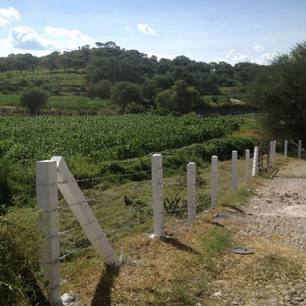
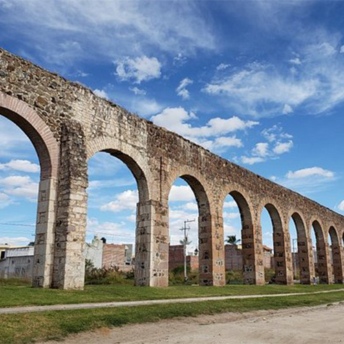
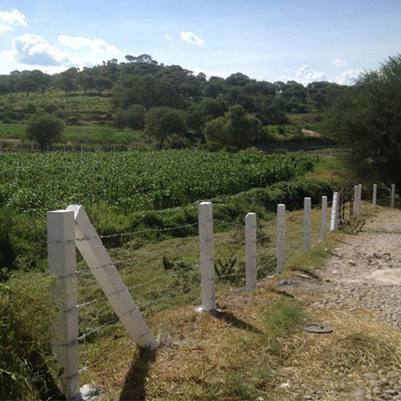
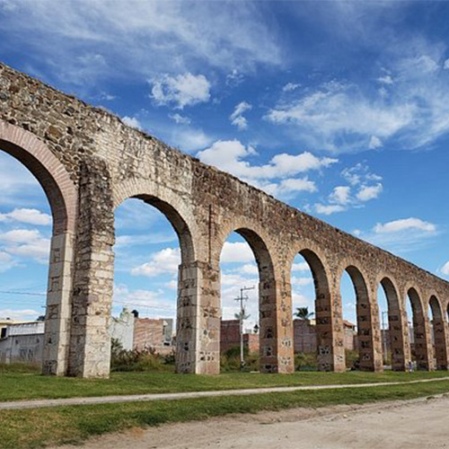

Jalostotitlán is a municipality located in the state of Jalisco, Mexico. It is situated in the western part of the country, approximately 150 kilometers northeast of Guadalajara, the state capital. The town of Jalostotitlán itself serves as the municipal seat. Jalostotitlán is known for its rich cultural heritage and historical significance. It has a population of around 40,000 residents, and its economy is primarily based on agriculture, commerce, and small-scale industries. The region's fertile soil allows for the cultivation of various crops such as corn, beans, and wheat. The town hosts various festivals and celebrations throughout the year, showcasing the vibrant culture and traditions of the region. One of the most famous events is the Feria de la Primavera, an annual spring fair that features traditional music, dance performances, rodeo shows, and agricultural exhibitions. The fair attracts people from neighboring towns and cities, adding to the festive atmosphere.
 


